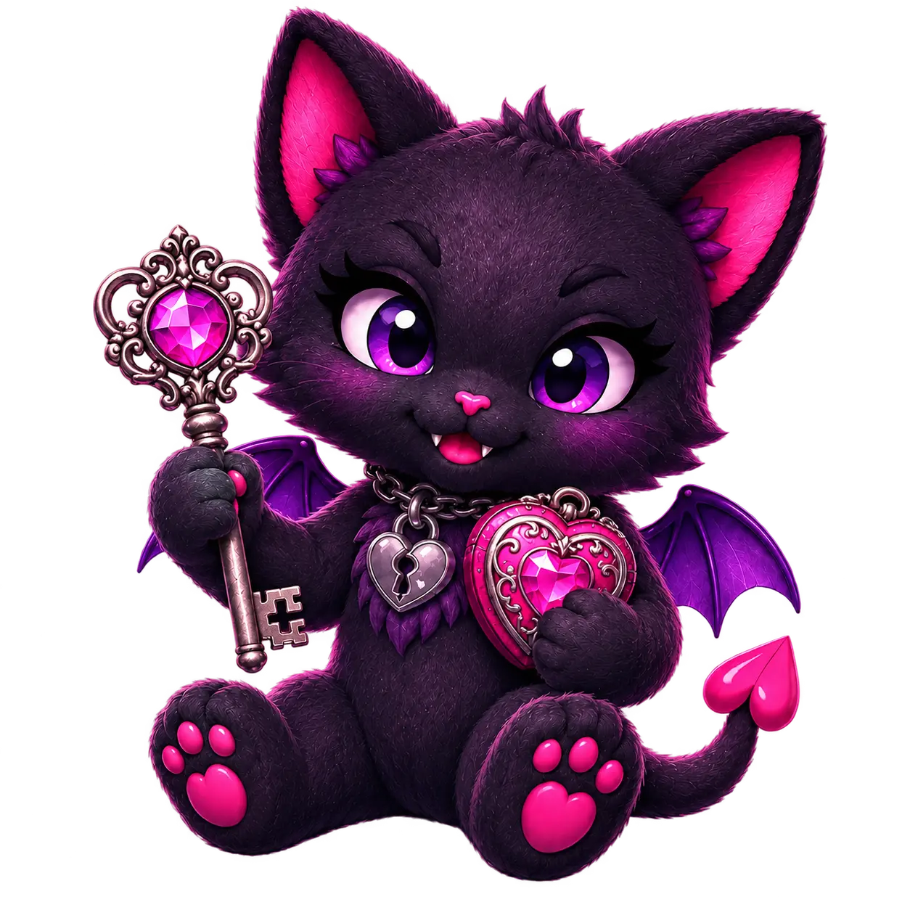
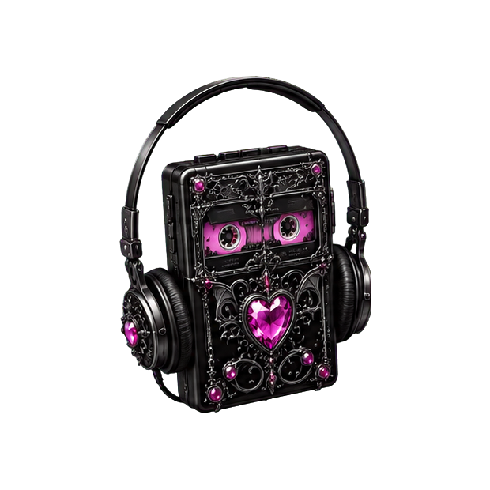
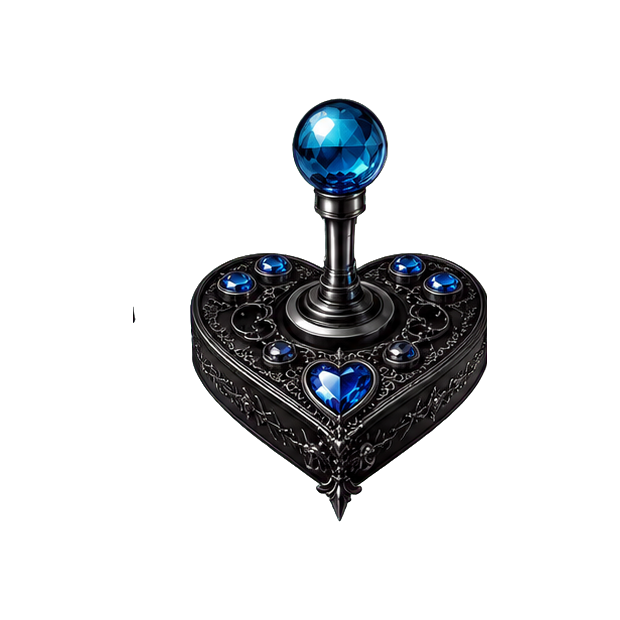
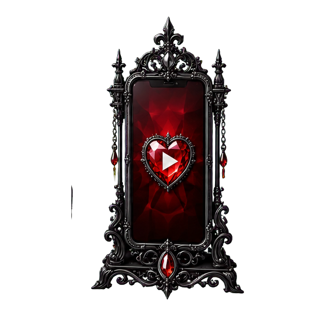
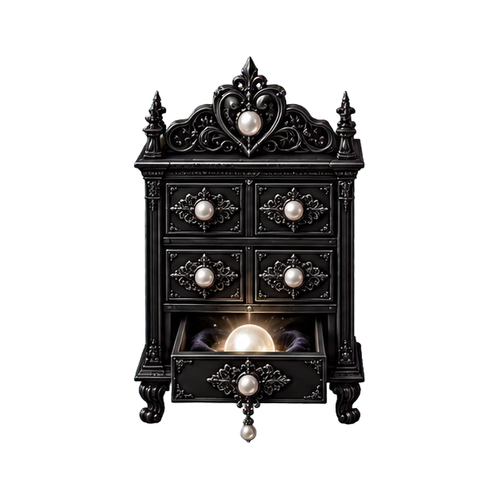
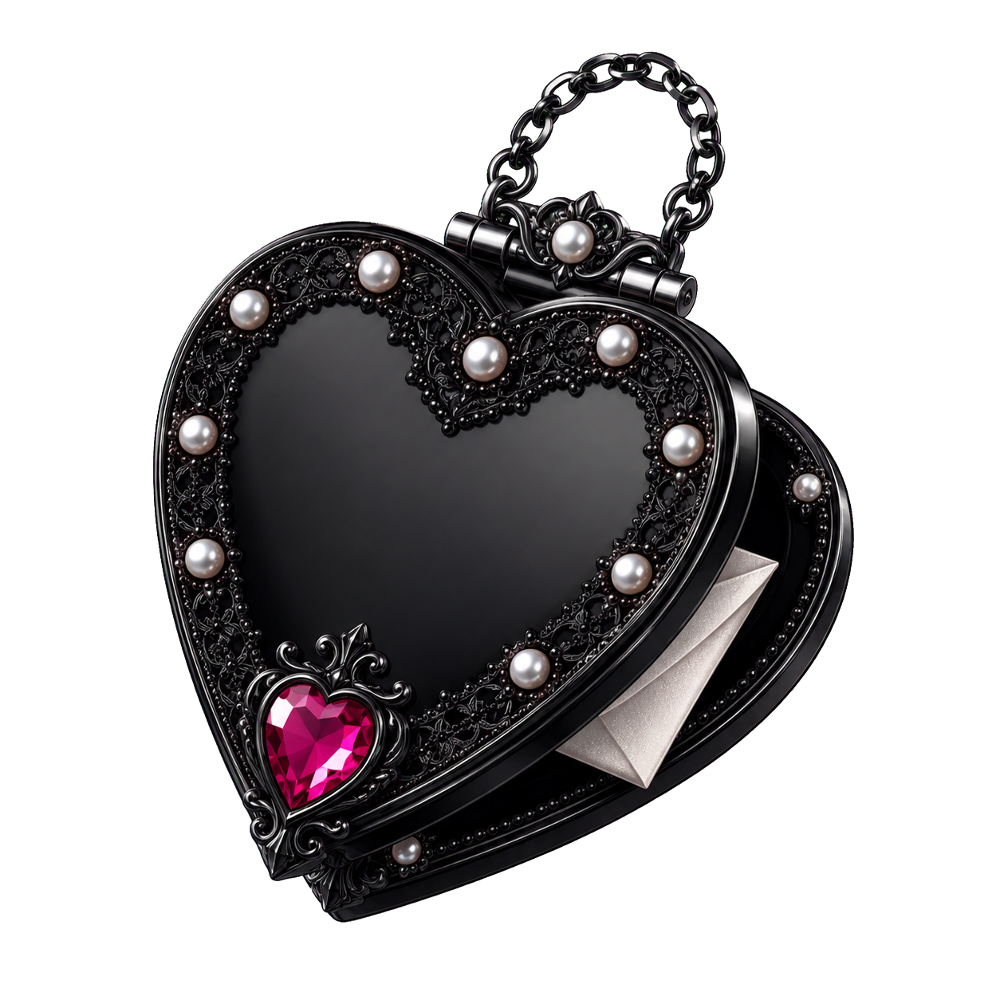

Main obsession
The throne is awaiting its first victim.
Official artwork, one sharp verdict, why it owns my brain, its official link, and a demon-cat rating will appear here.
The personal collection
Everything currently feeding my brain: music, books, games, videos, and the suspicious little fragments that become inspiration. Yes, I built another entire wing for fun. We have established the pattern.

Choose a drawer
Each hobby room gets its own color, filters, spoiler-aware warnings, and five-demon-cat verdicts. The creator showcase is different: equal jeweled recommendations, explicit permission, and absolutely no ranking fellow humans like competitive furniture.

Pink-violet roomSongs, albums, artists, current obsessions, discoveries, and music that infected a project.
Enter the listening room → Amber room
Amber roomCurrent reads, favorites, recommendations, abandoned books, and warnings that respect your choices.
Enter the library →
Blue roomWhat I am playing, what I finished, what defeated me, and what I would hand to someone else.
Enter the arcade →
Red roomHorror essays, performances, strange discoveries, and long videos suitable for horizontal existence.
Enter the screening room →
Pearl roomArt, places, folklore, fashion, dreams, moods, and questions that started chewing on a story.
Open the cabinet → Crimson-plum roomFilms, series, and limited series that delighted me, damaged me, or fed an escaped idea.
Take your velvet seat →Amber-violet roomManga, manhwa, webcomics, graphic novels, and Western comics with suspiciously powerful panels.
Open the illustrated shelf →
Community showcaseFellow AI-platform creators and scenarios I genuinely enjoy, featured only after they explicitly say yes.
Visit the showcase →Current Fixations
One obsession receives the throne. The runners-up remain nearby in case they stage a coup.
Official artwork, one sharp verdict, why it owns my brain, its official link, and a demon-cat rating will appear here.
A compact secondary fixation will live here.
Another current brain tenant gets a smaller seat.
Former main fixations will be filed here as compact cards, newest first.
Cards may wear no more than two seals. Even the demon cat has zoning laws.
Newest from every room
Each room launches properly when I provide its first entries. No empty recommendation cards pretending to know things.
Future cabinet offerings
Open the mobile Worksheet Cabinet, choose this room, and make whatever kind of mess the entry requires. Your draft stays in this browser until you export or copy it.